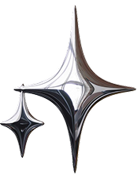
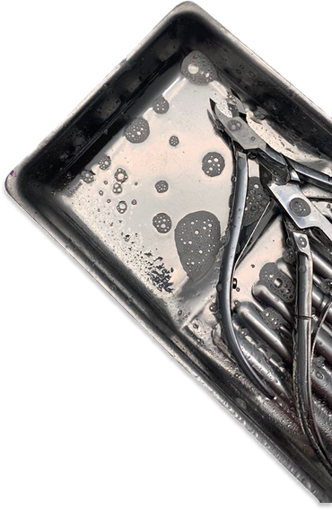
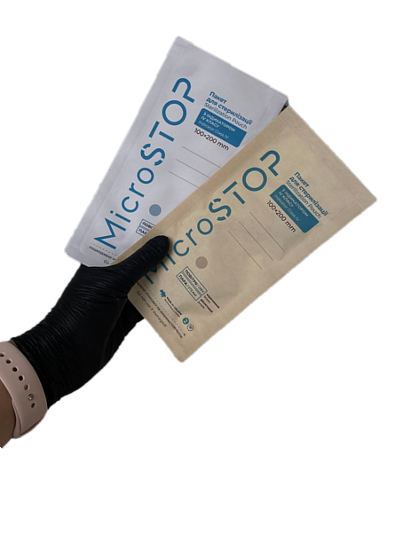

srdnails
Sterilization of instruments
Sterilization of manicure instruments is necessary to prevent infection transmission and ensure the safety of both the technician and the client.

The instruments are soaked in a special disinfectant solution recommended for manicure instruments.

After disinfection, the instruments are rinsed under running water and cleaned with a brush, removing any remaining disinfectant and dirt.

Dry-air oven: Instruments are treated with hot air at a high temperature (usually 180°C for an hour).

Sterile instruments are stored in kraft paper bags or in a UV sterilizer to maintain sterility.
